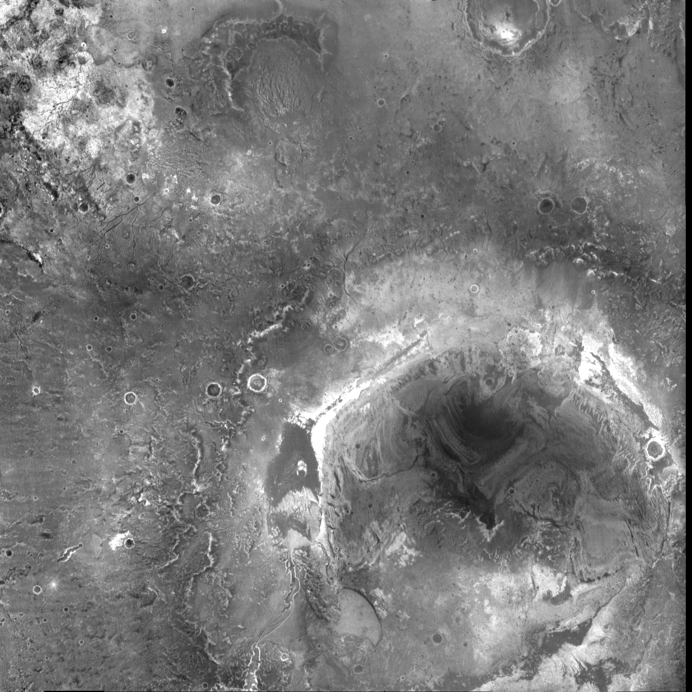

GALE CRATER / MARS
Lower Mount Sharp
Plan a return traverse through Curiosity’s boxwork region.
BOXWORK REGION
N↑
MARS ODYSSEY / THEMIS

90785 J m⁻² K⁻¹ s⁻½
Regional thermal inertia. Use it to compare how quickly surfaces heat and cool.
View THEMIS product ↗Elevation profile
CURIOSITY WAYPOINTSElevation coverage is unknown between the shortcut’s endpoints.